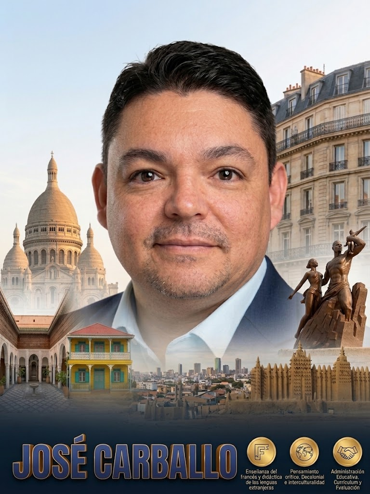

2026
En curso
Doctorando en Ciencias de la Educación
Universidad Católica de Costa Rica (UCAT)
Campus Moravia, San José, Costa Rica
Docente, investigador y co-autor de obras didácticas con trayectoria ininterrumpida desde 1999. Especialista en la enseñanza del francés y didáctica de las lenguas extranjeras, pensamiento crítico, pedagogía decolonial e interculturalidad, administración educativa, currículum y evaluación.

José H. Carballo Araya
Doctorando en Ciencias de la Educación
Investigador en los temas de la enseñanza del francés, el pensamiento crítico y decolonial, la evaluación, el currículum y la administración educativa.
Especialización en lingüística aplicada, didáctica del Francés Lengua Extranjera (FLE), producción de textos didácticos para educación a distancia, integración de tecnologías digitales y evaluación certificativa internacional DELF–DALF.
Reflexión epistemológica y pedagógica desde las Ciencias de la Educación orientada al análisis crítico del currículum, el diálogo intercultural en el espacio francófono y la descolonización de las prácticas educativas.
Sólida formación de posgrado en gestión estratégica de instituciones educativas, dotación del talento humano, diseño y desarrollo curricular y sistemas de evaluación de los aprendizajes.
Formación superior multidisciplinaria en Ciencias de la Educación, Lingüística Aplicada, Enseñanza del Francés, Currículum, Evaluación y Administración Educativa.
Universidad Católica de Costa Rica (UCAT)
Campus Moravia, San José, Costa Rica
Universidad Nacional (UNA)
Heredia, Costa Rica
Universidad Americana (U.A.M.)
San Pedro, Costa Rica
Universidad Latina de Costa Rica
San Pedro, Costa Rica
Universidad Latina de Costa Rica
San Pedro, Costa Rica
Universidad Estatal a Distancia (U.N.E.D.)
Sabanilla, San José, Costa Rica
Universidad San Isidro Labrador
Heredia, Costa Rica
Universidad San Marcos
San José, Costa Rica
Universidad Nacional (UNA)
Heredia, Costa Rica
Producción intelectual y mediática desarrollada junto a instituciones públicas y universitarias de Costa Rica.
Obra elaborada en el marco del convenio entre el Instituto Costarricense de Enseñanza Radiofónica (ICER) y el Ministerio de Educación Pública (MEP), Dirección de Desarrollo Curricular.
Libro de texto oficial publicado en el convenio entre el Instituto Costarricense de Enseñanza Radiofónica (ICER) y el Ministerio de Educación Pública (MEP), Dirección de Desarrollo Curricular.
Participación como Co-Animador en el proyecto académico y cultural del Departamento de Francés de la Universidad Nacional (UNA), producido por el S.I.N.A.R.T. en San José, Costa Rica.
Ejercicio profesional en administración del talento humano, docencia en universidades estatales y privadas, Alianza Francesa y educación internacional.
Dirección Regional de Educación, San José Central – Ministerio de Educación Pública (MEP)
Gestión administrativa y procesos de dotación del talento humano en la Dirección Regional de Educación San José Central.
Convenio Instituto Costarricense de Enseñanza Radiofónica (ICER) y Ministerio de Educación Pública (MEP)
Desarrollo de obra didáctica junto a la Dirección de Desarrollo Curricular del MEP.
Convenio Instituto Costarricense de Enseñanza Radiofónica (ICER) y Ministerio de Educación Pública (MEP)
Co-autoría del texto oficial de Francés A1 junto a la Dirección de Desarrollo Curricular del MEP.
Ministerio de Educación Pública (MEP) – San José, Costa Rica
Amplia trayectoria docente en la enseñanza de la lengua y cultura francesa en el sistema educativo público costarricense.
Alianza Francesa de Costa Rica – San José, Costa Rica
Docencia especializada de Francés Lengua Extranjera (FLE) y preparación lingüística internacional.
Universidad Latina de Costa Rica – San Pedro, San José, Costa Rica
Ejercicio de la docencia en educación superior universitaria.
Departamento de Francés, Universidad Nacional (UNA) – Producido por el S.I.N.A.R.T.
Proyecto de difusión lingüística y cultural francófona realizado en San José, Costa Rica.
U.N.E.D. (Universidad Estatal a Distancia) – Sabanilla, San José, Costa Rica
Docencia universitaria de lengua francesa en los programas de extensión docente de la UNED.
Colegio Británico de Costa Rica – Rohrmoser, San José, Costa Rica
Enseñanza del francés como lengua extranjera en institución educativa internacional.
Liceo Philibert Dessaignes y Liceo de Hostelería y de Turismo del Valle del Loira – Academia de Orléans-Tours
Experiencia pedagógica e intercultural desarrollada en la ciudad de Blois, Francia.
Capacitaciones y acreditaciones oficiales en evaluación, pedagogía y didáctica del Francés Lengua Extranjera (FLE).
Certificación de participación • Francia Educación Internacional, Promoción del francés en América Central
2026Certificación de participación • Francia Educación Internacional, Promoción del francés en América Central
2026Certificación de seguimiento • Francia Educación Internacional
2022Centro Internacional de Estudios Pedagógicos (CIEP) • París, Francia
2021Alianza Francesa de San José, Costa Rica
2020Universidad Nacional (UNA) • Heredia, Costa Rica
2014Instituto Francés, Alianza Francesa de San José, Costa Rica
2013Instituto Francés, Alianza Francesa de San José, Costa Rica
2012Instituto Francés, Alianza Francesa de Panamá
2012Dominio certificado bajo los niveles del Marco Común Europeo de Referencia para las Lenguas (MCER).
Lengua Materna (LM)
Nivel Avanzado C1 (DALF C1)
Nivel Intermedio Avanzado B1+
Nivel A2
Disponible para docencia e investigación universitaria, comisiones curriculares y de evaluación, asesoría académica y proyectos interinstitucionales.
Puedes enviar un correo haciendo clic directamente o copiar la dirección con un clic.